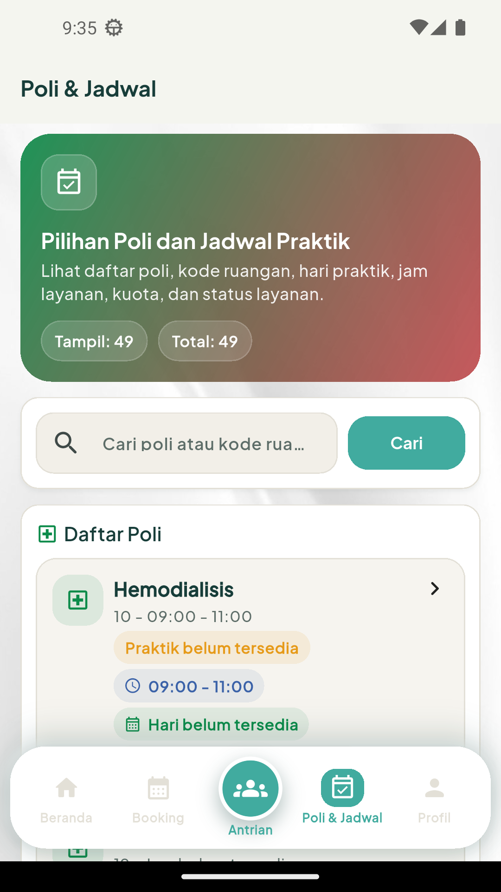
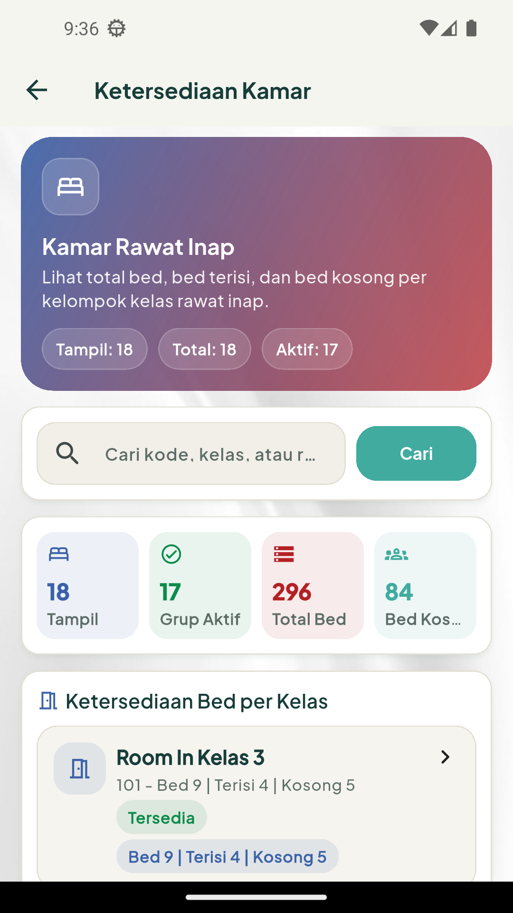
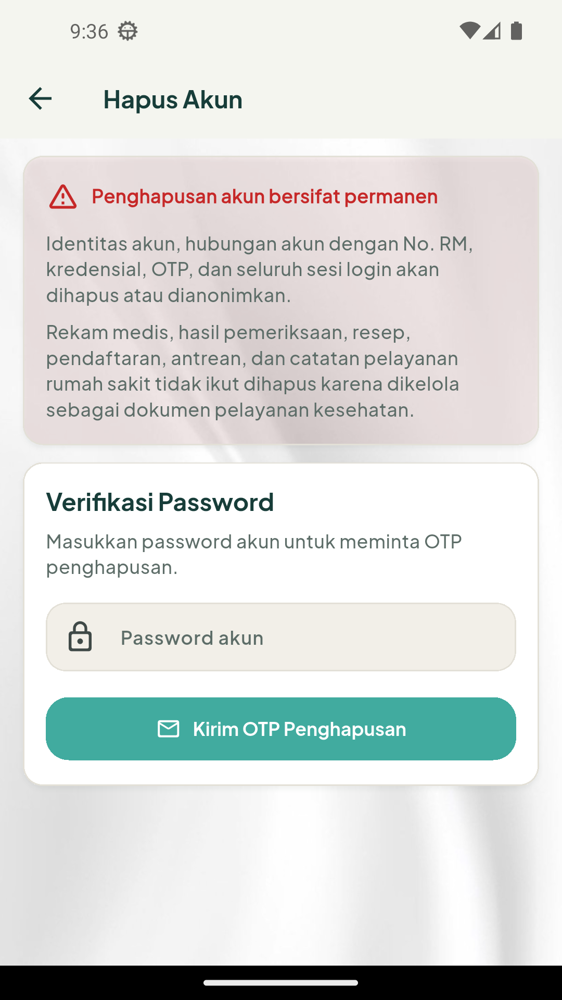

Beranda dan Informasi Publik
Gunakan Beranda untuk pintasan layanan. Tab Poli & Jadwal digunakan untuk mencari poli, dokter, jadwal, dan ketersediaan kamar tanpa login.

Beranda sesi akun aktif.

Poli & Jadwal.
RSUD Oto Iskandar Di Nata Kabupaten Bandung
Versi 1.0 | 10 September 2026
Dokumen operasional internal
SIPANTES membantu pengguna memperoleh informasi layanan, mengelola akun, menghubungkan rekam medis, melihat layanan personal, serta membuat booking pendaftaran umum.
Gunakan Beranda untuk pintasan layanan. Tab Poli & Jadwal digunakan untuk mencari poli, dokter, jadwal, dan ketersediaan kamar tanpa login.
Beranda sesi akun aktif.

Poli & Jadwal.
OTP bersifat rahasia; periksa spam jika email belum diterima.
Setelah terhubung, menu personal meliputi profil pasien, riwayat kunjungan, diagnosis/tindakan, hasil lab, radiologi, resep, serta resume medis PDF.

Halaman pendaftaran/antrian.

Informasi ketersediaan kamar.
Jangan kirim booking berulang saat jaringan lambat.

Halaman penghapusan akun.
Logout membersihkan sesi perangkat. Hapus Akun memerlukan password, OTP email, dan konfirmasi permanen. Rekam medis rumah sakit tidak ikut dihapus.
| Kendala | Tindakan |
|---|---|
| OTP tidak diterima | Periksa spam dan minta OTP baru. |
| Data gagal dimuat | Periksa koneksi dan coba kembali. |
| Sesi habis | Login ulang. |
| No. RM gagal terhubung | Validasi data atau hubungi pendaftaran. |